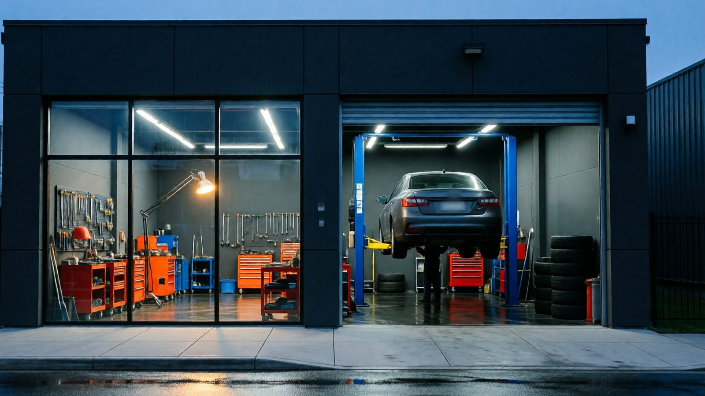
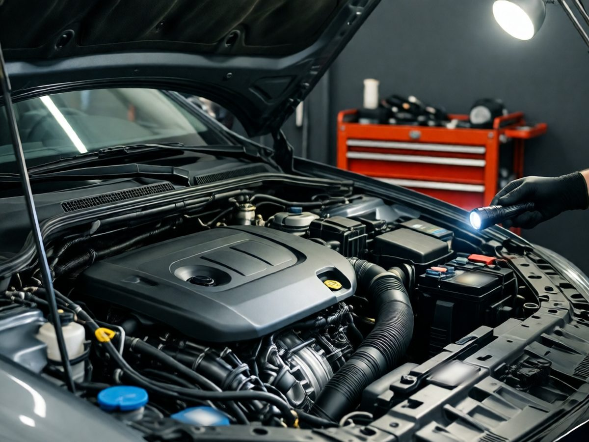
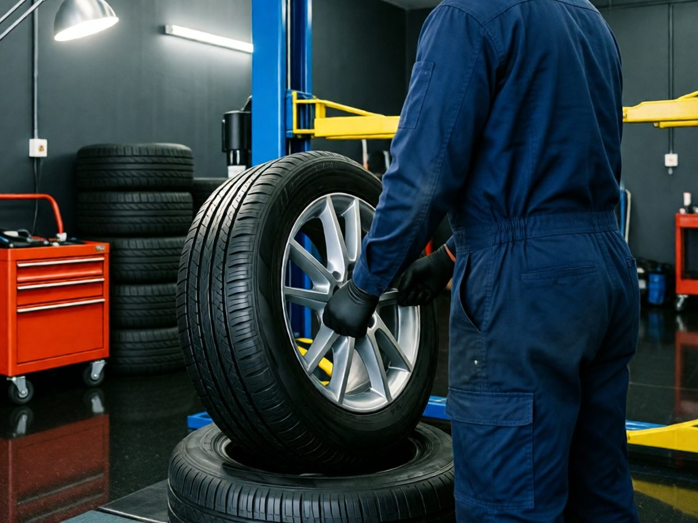
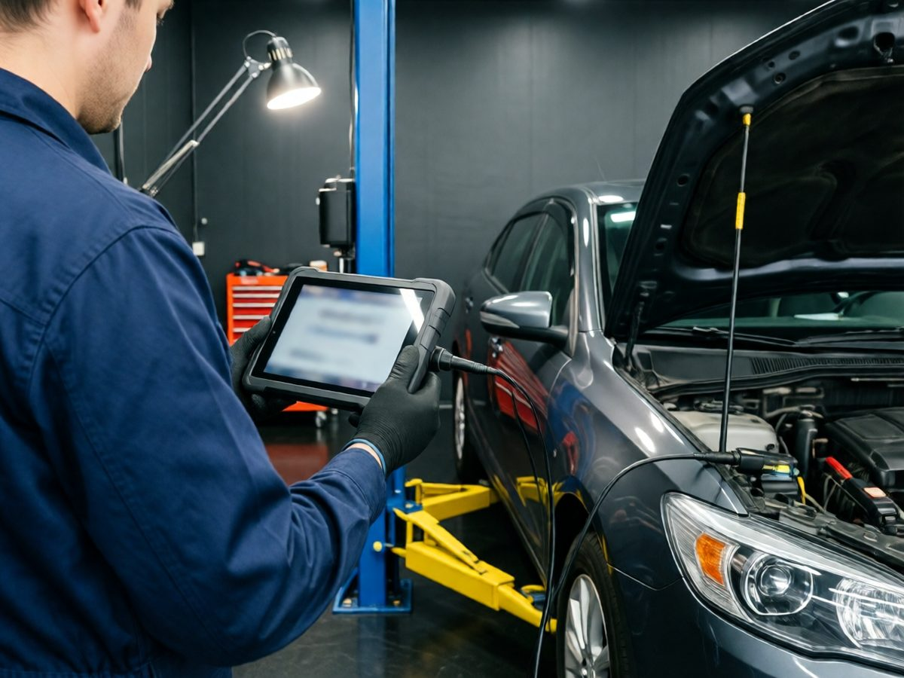
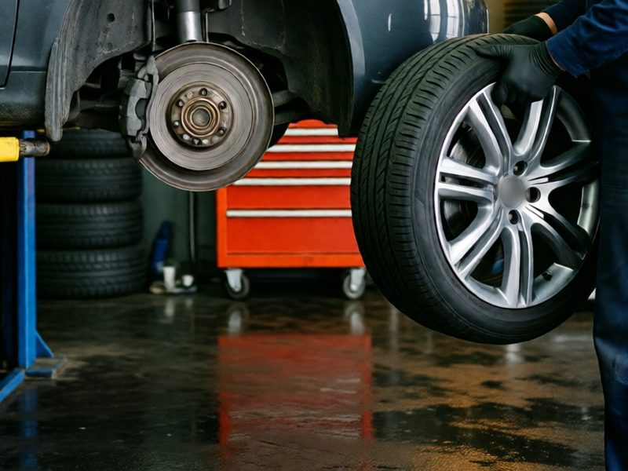
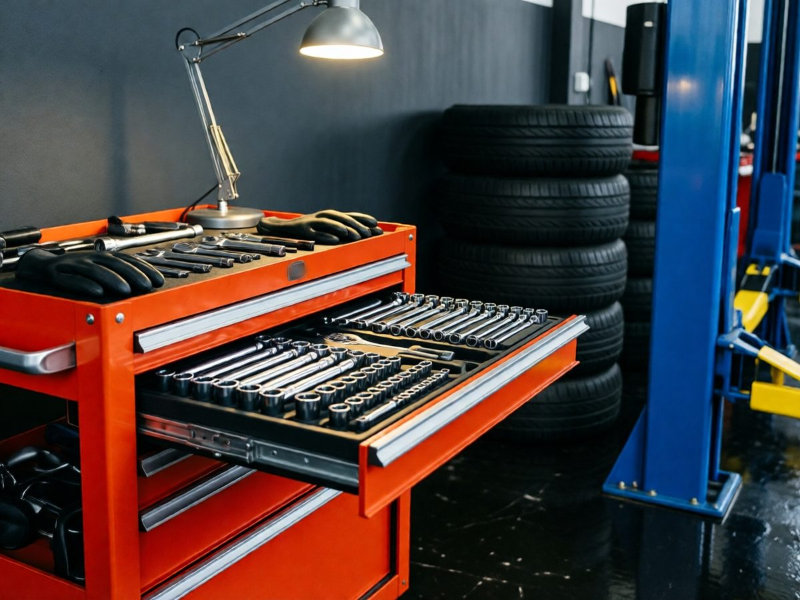

Officina meccanica a Novara · dal 1998
Il prezzo lo sai prima
che apriamo
il cofano.
Tagliandi, freni, gomme e diagnosi su auto di tutte le marche. Preventivo scritto, auto pronta all'ora che ti diciamo, e se serve ti lasciamo l'auto di cortesia.
01 · Chi siamo
Officina di famiglia, dal 1998

- 1998Apre mio padre Gianni, con un ponte solo
- 2 pontipiù una corsia per le gomme e il banco di diagnosi
- 3 personeMarco, Davide e Luca, sempre gli stessi
- 1 autodi cortesia, da prenotare insieme al lavoro
L'officina l'ha aperta mio padre nel 1998, in questo capannone di via dei Mestieri. Oggi i ponti sono due e siamo in tre: io, mio cugino Davide e Luca, che è con noi da otto anni.
Lavoriamo su tutte le marche, benzina, diesel, GPL, metano e ibride. Per le auto ancora in garanzia seguiamo il piano della casa, con ricambi originali o di qualità equivalente, e la garanzia resta valida.
Il metodo è quello di sempre: prima guardiamo l'auto, poi ti diciamo cosa serve e quanto costa. Se mentre lavoriamo troviamo altro, ti chiamiamo prima di toccarlo.
Marco Belloni, titolare
02 · Servizi e prezzi
Cosa facciamo, quanto costa
Prezzi di partenza per un'utilitaria, IVA compresa. Prima di iniziare guardiamo l'auto e ti diamo il preventivo scritto: se poi troviamo altro, ti chiamiamo prima di toccarlo.
-
in giornatada120 €
Tagliando
Olio, filtri e controlli secondo il piano della casa. La garanzia del costruttore resta valida.
-
2-3 oreda90 €
Freni
Pastiglie, dischi e liquido. Lo spessore te lo misuriamo gratis mentre aspetti.
-
40 minutida40 €
Gomme
Cambio stagionale, equilibratura e convergenza. Le gomme dell'altra stagione le teniamo noi.
-
30 minutida35 €
Diagnosi elettronica
Spia accesa? Leggiamo gli errori della centralina e ti diciamo cosa serve davvero, e cosa può aspettare.
-
1 orada70 €
Climatizzatore
Ricarica del gas, prova delle perdite e sanificazione dell'abitacolo. Meglio farlo ad aprile, prima del caldo.
-
su appuntamentoda79 €
Revisione
Pre-controllo in officina e revisione. Alla prossima scadenza ti mandiamo noi un messaggio.
-
1 giornoda380 €
Distribuzione
Cinghia o catena, pompa dell'acqua e tendicinghia, ai chilometri indicati dalla casa. Il kit te lo facciamo vedere prima di montarlo.
-
1-2 giornida450 €
Frizione
Disco, spingidisco e cuscinetto; il volano lo cambiamo solo se serve davvero, e te lo diciamo prima.
-
30 minutida110 €
Batteria ed elettrauto
Test della batteria, sostituzione e registrazione sulle auto con start&stop, alternatore, motorino e luci.
I prezzi cambiano con il modello dell'auto e i ricambi scelti: per la tua auto chiedi il preventivo, è gratis. Fattura sempre con il dettaglio di ricambi e manodopera.
03 · Come lavoriamo
Dall'accettazione alla riconsegna
Quattro passaggi, sempre gli stessi. Così sai in ogni momento a che punto è la tua auto e quanto spenderai.
Accettazione
Ci racconti il problema e facciamo un giro di prova insieme, se serve. Segniamo chilometri e livello del carburante sulla scheda di lavoro.
Preventivo scritto
Ti diciamo cosa va fatto, cosa può aspettare e quanto costa. Non mettiamo mano all'auto finché non ci dai l'ok.
Lavoro
Se troviamo altro ti chiamiamo, ti mandiamo una foto su WhatsApp e decidi tu. I pezzi sostituiti te li lasciamo nel bagagliaio.
Riconsegna
Auto pronta all'ora concordata, con la fattura voce per voce. Ricambi e manodopera sono garantiti.
04 · L'officina
Dentro l'officina
Due ponti, una corsia per le gomme e il banco di diagnosi. Quello che vedi quando porti l'auto da noi.





05 · Recensioni
Cosa dicono i clienti
Qualche parere di chi ha portato l'auto da noi. Le altre recensioni le trovi su Google.
Spia motore accesa due giorni prima delle ferie. Mi hanno preso il sabato mattina: era un sensore da 60 euro, un'altra officina voleva cambiarmi la valvola EGR.
Tagliando con preventivo scritto, e alla fine ho pagato esattamente quella cifra. Sembra poco, ma non mi era mai successo.
Mi hanno lasciato l'auto di cortesia per i due giorni della frizione. Auto pronta il giorno detto, e mi hanno anche fatto vedere il disco vecchio.
06 · Domande frequenti
Le domande che ci fate al banco
Se la tua non c'è, chiamaci: rispondiamo noi, non un centralino.
Se faccio il tagliando da voi perdo la garanzia della casa?
No. Seguiamo il piano di manutenzione del costruttore e usiamo ricambi originali o di qualità equivalente, come prevede la legge europea. Timbriamo il libretto o aggiorniamo il registro digitale.
Serve l'appuntamento?
Per tagliandi, freni e revisioni sì, così l'auto entra subito sul ponte. Per una spia accesa o una gomma bucata passa pure: se possiamo, ti guardiamo l'auto in giornata.
Quanto costa la diagnosi se poi faccio il lavoro da voi?
Se il lavoro lo facciamo noi, la diagnosi la scaliamo dal conto finale.
Posso portare i ricambi comprati online?
Sì, ma in quel caso la garanzia copre solo la manodopera. Prima di ordinarli chiamaci: ti diciamo se sono quelli giusti per la tua auto.
Avete l'auto di cortesia?
Sì, una. Va prenotata insieme al lavoro, per i lavori che durano più di una giornata.
Come si paga?
Contanti, bancomat e carte di credito. La fattura è sempre dettagliata, anche per i lavori più piccoli.
07 · Orari e dove siamo
Quando trovarci
A pranzo chiudiamo, ma se hai un'urgenza lascia un messaggio: ti richiamiamo appena rientriamo.
| Lunedì | 8:00–12:30 · 14:00–18:30 |
|---|---|
| Martedì | 8:00–12:30 · 14:00–18:30 |
| Mercoledì | 8:00–12:30 · 14:00–18:30 |
| Giovedì | 8:00–12:30 · 14:00–18:30 |
| Venerdì | 8:00–12:30 · 14:00–18:30 |
| Sabato | 8:00–12:00 |
| Domenica | Chiuso |
Chiusi per ferie le due settimane centrali di agosto.
28100 Novara
Zona artigianale, di fronte al distributore. Parcheggio clienti davanti all'officina; le chiavi si lasciano nella cassetta accanto alla saracinesca.
Apri in Google Maps08 · Preventivo
Chiedi un preventivo
Scrivici modello e anno dell'auto e cosa ti serve: ti richiamiamo entro un giorno lavorativo con una cifra. Se è urgente, il telefono è più veloce.
- Telefono officina0321 000000
- WhatsApp345 000 0000
- Emailinfo@autofficinabelloni.it